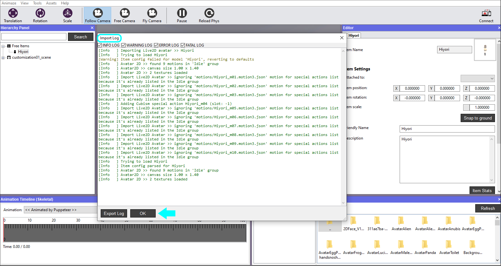

Animazeエディター入門
Animazeエディターは、芸術家、マニア、専門家が2DコンテンツをAnimaze Avatarのアプリに追加できるようにするオーサリングツールです。Animazeのプラットフォームは、Cubism EditorからエクスポートされたLive2Dランタイムモデルをサポートしています（サポート対象のランタイムは3.0、3.1、3.2、3.3、4.0です）。
このガイドでは、Animazeエディター入門用に、ヒヨリという名前のサンプルモデルを使用します。このモデルはここからダウンロードすることができます。サンプルモデルとしてヒヨリを選んだのは、特殊アクションと物理演算を有するフルボディモデルだからです。
サンプルモデルのヒヨリをインポートするには、以下の手順に従ってください：
-
このリンクからヒヨリのアーカイブをダウンロードして、中身のファイルを展開します。
-
Animazeエディターを開き、アセットへ移動し、Live2Dのアバターをインポートを選択します

-
モデルの.jsonファイルを選択し、クリックして開きます

-
インポートするファイルを選択するウィンドウが表示されます。初めて特定のモデルをインポートする場合、インポートをクリックする前に、すべてのファイルにチェックが入っていることを確認してください。
 5. Animazeエディターがファイルにエラーや警告がないかチェックした後、インポートログが表示されます。すべてが緑色であれば、先に進むことができます。OKをクリックして、ログを消します。
5. Animazeエディターがファイルにエラーや警告がないかチェックした後、インポートログが表示されます。すべてが緑色であれば、先に進むことができます。OKをクリックして、ログを消します。

-
アバターをインポートすると、ビューポートに表示されます。

シーンにおけるアバター
これでサンプルモデルをインポートできました。Cubism Editorで自分自身のLive2Dのモデルを作成するには、こちらの手順に従ってください。